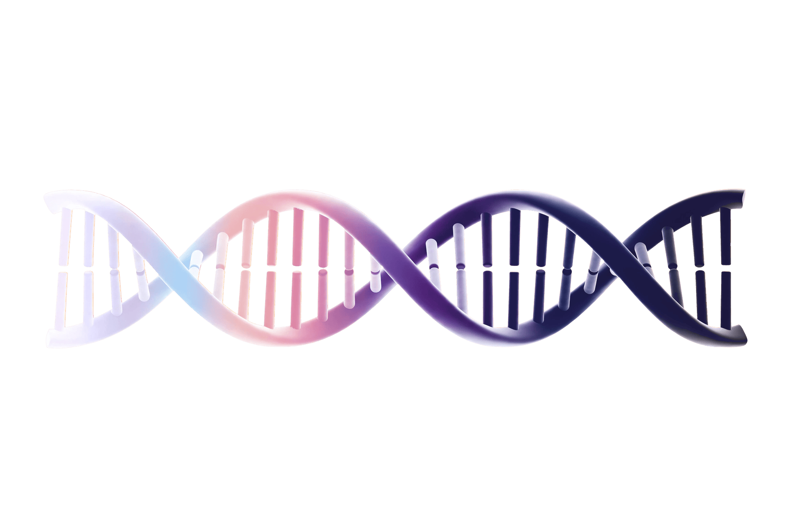
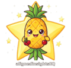

The Story Behind AlignedInsightsEQ
At birth, I was given the name Jessicia.
Jessicia carried me through many years of misalignment, confusion, and learning everything by learning what not to do first. I felt the full weight of being misunderstood and lost, weaving in and out of symbolic frameworks, spiritual systems, and psychological modalities like someone drinking water in a desert.
I became an escapist, running away from any emotion I didn't enjoy—pushing down pain and frantically searching for warmth and happiness outside of myself. I convinced myself I was ignoring those undesirable emotions, while the chaos and scattered thoughts consistently nagged at me in the back of my mind. They showed up as unhealthy coping, projecting, and persistent anxiety that I wasn't allowing myself to address. I pushed the blame onto my upbringing and past trauma approaching adulthood, not taking accountability for my responsibility as an adult to do the hard work. So I choose to take action, I choose to take control over my life and most importantly my future. Taking myself from victim to sovereign creator.
I don't know what happens when we leave this planet. But I do know that if consciousness is the only thing that remains after death, I want my inner landscape—my mind—to be a beautiful place to spend eternity. And I realized that building that requires doing the hard, uncomfortable work.
So, I began doing the work. I brought those things demanding my attention in the back of my mind into awareness, with compassion and without judgment, the exact same way I would approach a loved one confiding in me. I shifted through the muck I had allowed to accumulate and distort the way I perceived my reality. With every transmuted unhealthy conditioned pattern, adaptive strategy, or thought distortion, my once fragile lens became a magnifying glass. With that awareness, I facilitated change. And following that change came more change—in my perspective, my character, and my overall reality.
Slowly, I began to no longer relate or resonate with the version of myself I once thought of as "who I am becoming." I became intimately familiar with the fluidity of human identity. I learned the importance of accepting, honoring, and grieving that old version of myself, without getting locked into the grief or creating another box for myself to live in.
This is where my name evolution reflects my internal one.
Jessicia is not removed; she evolved. She is the foundation that transmuted into my found clarity: Yeshi. I honor Jessicia with the understanding and compassion she worked so hard to find. Where Jessicia collected fragments of insight, unsure how to assemble them, Yeshi holds the entire picture. Yeshi is the grounded, clear-headed identity I earned through the work.
And then there is Cherry Pineapple Upsidedown Starshine. She is the playful embodiment of my creative expression, my newfound self-love, and the freedom that comes when you stop taking life so seriously.
This evolution is why the Alignment Codex is rooted in Identity Fluidity. We are not meant to stay in the same box forever. The Codex is designed to give the power back to you. You are a living spectrum. You are allowed to change, to contradict yourself, and to grow without feeling like you are losing who you are.
